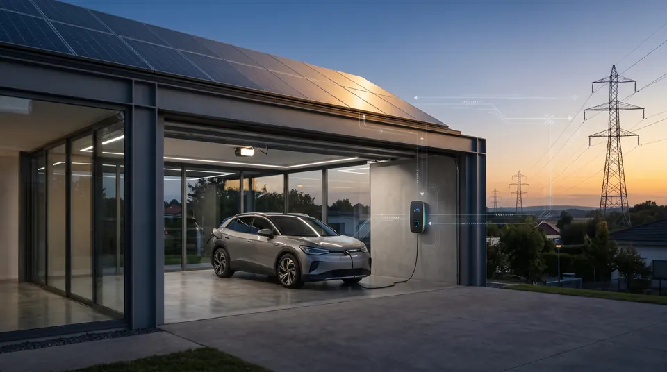

Série: O Efeito Borboleta do Dinheiro — Da Canetada em Pequim à Tomada da Sua Casa (Chamada e Índice)
Tempo de leitura: aproximadamente 5 minutos.
Quando pensamos no termo "efeito borboleta", a imagem poética de um bater de asas na Ásia causando uma tempestade no Atlântico costuma soar como mera metáfora. Na economia globalizada de 2026, no entanto, essa causalidade é mensurável, física e bate à nossa porta todos os dias.
Esta trilogia especial — O Efeito Borboleta do Dinheiro — foi escrita para conectar pontas que analistas convencionais costumam tratar em silos isolados: política monetária e controle de capitais, comércio exterior, reconfiguração do chão de fábrica automotivo, redes inteligentes de distribuição e o custo de sobrevivência da família trabalhadora.
Como uma canetada de crédito do governo chinês para mitigar uma crise imobiliária doméstica deságua em milhares de scooters elétricas no trânsito de Campo Largo? Por que essa mesma onda forçou as montadoras centenárias a um ciclo de R$ 100 bilhões em Híbridos-Flex? E de que maneira o carro na garagem de quem trabalha em home office se transforma em uma usina elétrica particular — provocando a reação imediata do Estado e das distribuidoras com a cobrança de tarifas binômicas?
O Calendário e os Três Atos da Trilogia

Cronograma: índice e Parte 1 em 10/10; Parte 2 em 13/10; conclusão em 18/10 de 2026.
Por que essa reflexão importa agora?
O cidadão comum costuma enxergar a geopolítica como uma abstração distante discutida em cúpulas diplomáticas. No entanto, é o preço do dinheiro e a corrida pelos recursos que definem quanto você paga no frete do aplicativo, qual moto o entregador consegue comprar para sustentar sua família e como a conta de luz é desenhada para garantir os dividendos de grandes fundos de investimento.
Esta série convida o leitor a descer do plano dos slogans e compreender as forças materiais concretas que governam a tecnologia, a infraestrutura e a nossa soberania cotidiana.
Dicionário Geral da Trilogia (para leigos)
Os conceitos-chave para acompanhar os três artigos com total clareza:
- PBOC & Controle de Capitais
- O banco central da China e as regras que impedem a saída livre de dólares, permitindo ao Estado baixar juros e direcionar crédito pesado para indústrias sem risco de fuga imediata de capital.
- Exportação de Deflação
- O envio em massa de excedentes fabris para o mercado externo a preços extremamente baixos, contendo a inflação de países importadores e estressando concorrentes locais.
- Oligopólio & Híbrido-Flex
- A estrutura de poucas montadoras tradicionais que dominavam o Brasil e a tecnologia de sobrevivência adotada por elas unindo baterias ao etanol de cana.
- Smart Grids & V2G (Vehicle-to-Grid)
- Redes elétricas inteligentes onde o carro na tomada não apenas consome, mas devolve energia para a cidade nos horários de pico, sendo pago por isso.
- Tarifa Binômica
- Modelo de cobrança de energia que fatura um valor pelo consumo real e uma taxa fixa obrigatória pelo direito de estar plugado aos cabos e transformadores da concessionária.
Nota: Esta publicação é a chamada e índice oficial da trilogia "O Efeito Borboleta do Dinheiro".